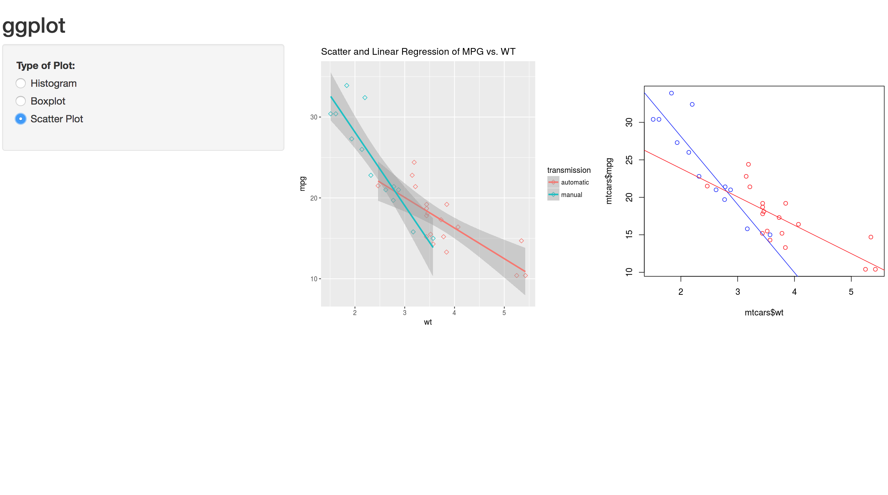

|
The "StatClub" is an undergraduate statistics club at Southern Methodist University.
It is a student-run academic group with the goal of providing students with tools and opportunities to grow within the field of statistics. We hold events throughout the year.
For more information, please contact our president: Hannah Cramer (email address). Our next meeting:February 23, 2018 (time and location TBA)We will have a guest speaker: Ryan Cole (a graduate student in the Statistics Department). He will be going over some aspects of Python, which is a heavily used scripting/scientific computing platform.Additionally, we will continue to plan future events, in particular Data Fest! There will be pizza and light refreshments. If you are on the mailing list, please RSVP to the invite when it arrives (if you would like to be added to the mailing list, contact Bivin Sadler (bsadler@smu.edu). Data Fest:Southern Methodist University will be hosting the first ever Texas edition of Data Fest If you are interested in being involved, either as a participant, judge, advisor, or sponsor, email Bivin Sadler (bsadler@smu.edu) [edit: maybe make a new, temporary email address?] |
 |